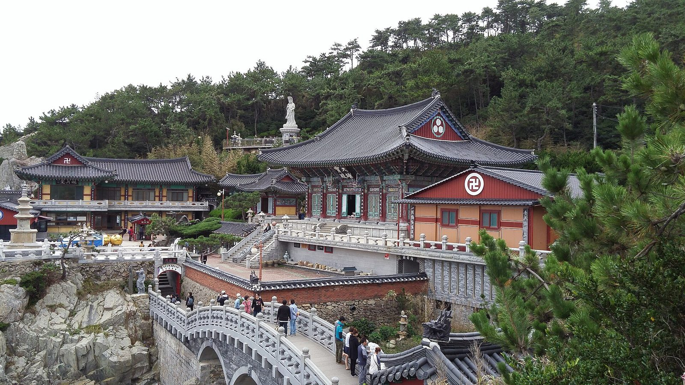
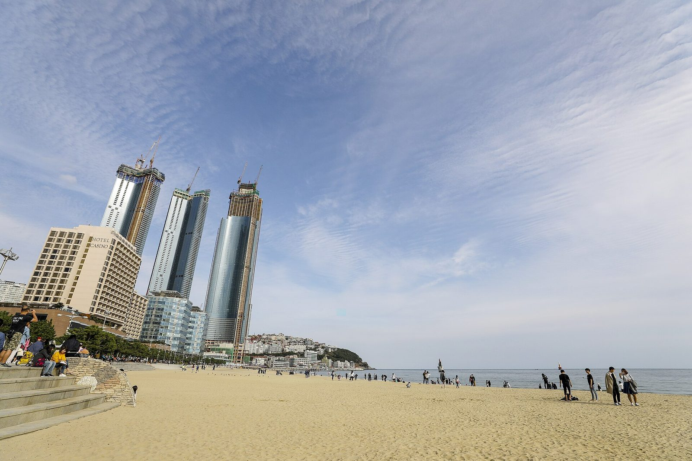

Busan
Korea's second city sits on the sea: beaches at Haeundae and Gwangalli, a huge fish market, hillside villages and temples on the cliffs. It is about two and a half hours from Seoul by KTX.


Planning a trip to Busan
New to Busan? Start with a 1-day itinerary and the KTX train from Seoul.
Getting there
The KTX train runs from Seoul Station to Busan Station in about two and a half to three hours. Gimhae Airport has domestic flights from Seoul and Jeju and some international routes, and is linked to the city by light rail and bus.
How long to stay
Two or three days is enough for the beaches, Gamcheon Culture Village, Haedong Yonggungsa temple and Jagalchi fish market without rushing. Busan also works as the last stop of a one-week trip from Seoul via Gyeongju.
Getting around
Busan has a subway with four main lines, and the same T-money card you use in Seoul works here. The sights are spread along the coast, so expect some longer rides; buses and taxis fill the gaps, especially for the temple and the hillside villages.
When to go
Busan is a few degrees milder than Seoul in winter. July and August are beach season, lively but crowded. Spring and autumn are the best for walking the coastal paths, and early October brings the Busan International Film Festival.
Where to stay
Haeundae is the classic beach base with big hotels; Gwangalli has the bridge view and a lively bar scene; Seomyeon and Nampo are central and good for food, markets and transport.
What to see first
Spend one day on the east side: Haeundae Beach, the Blueline Park sky capsules or beach train along the coast, and Haedong Yonggungsa, a temple built on the rocks above the sea. Spend another in the old centre: Jagalchi fish market, BIFF Square, Gukje Market and the colourful hillside houses of Gamcheon Culture Village. In the evening, the Gwangan Bridge lights up over Gwangalli Beach.
What to eat
Busan is known for dwaeji gukbap (pork and rice soup), milmyeon (cold wheat noodles, a local take on naengmyeon), and very fresh raw fish at Jagalchi, where you choose your fish downstairs and eat it upstairs. Ssiat hotteok, a sweet pancake filled with seeds, is the street snack to try around BIFF Square.
Good to know
Distances along the coast are longer than they look on a map, so group sights by area. Beaches are busiest on summer weekends and during the July and August holidays. Taxis are a good shortcut up the steep roads to Gamcheon and between the temple and Haeundae.
Places worth your time in Busan
The Korean name is the one to show a taxi driver or paste into Naver Map or KakaoMap.
Haedong Yonggungsa Temple 해동용궁사
A temple built on the rocks above the sea, north-east of Haeundae, which is rare in a country where most temples are in the mountains. Go early in the morning, before the tour buses, and expect a lot of steps.
Haeundae Beach and Blueline Park 해운대블루라인파크
Busan's most famous beach. From Mipo, at its eastern end, small sky capsules and a beach train run along the old coastal railway to Cheongsapo and Songjeong; book ahead at weekends.
Gamcheon Culture Village 감천문화마을
Brightly painted houses stacked up a steep hillside, with murals, small galleries and viewpoints. Take the village bus or a taxi up from Toseong Station and walk down.
Jagalchi Fish Market 자갈치시장
Korea's largest seafood market. Choose your fish from the tanks on the ground floor and have it prepared in the restaurants upstairs; BIFF Square and Gukje Market are a short walk away.
Gwangalli Beach 광안리해수욕장
The beach with the view of Gwangan Bridge, which is lit up after dark. Cafés and bars line the seafront, and a drone light show is held on many Saturday evenings.
Spa Land Centum City 스파랜드 센텀시티
A large, modern jjimjilbang inside the Shinsegae Centum City department store, with hot spring baths and many themed sauna rooms. It is an easy first Korean bathhouse.
Festivals coming up in Busan
- Busan Christmas Village120 Suyeonggangbyeon-daero, Haeundae-gu, Busan · 크리스마스 빌리지 부산Find it on Naver Map
- Haeundae Light Festival280 Haeundaehaebyeon-ro, Haeundae-gu, Busan · 해운대 빛축제Find it on Naver Map